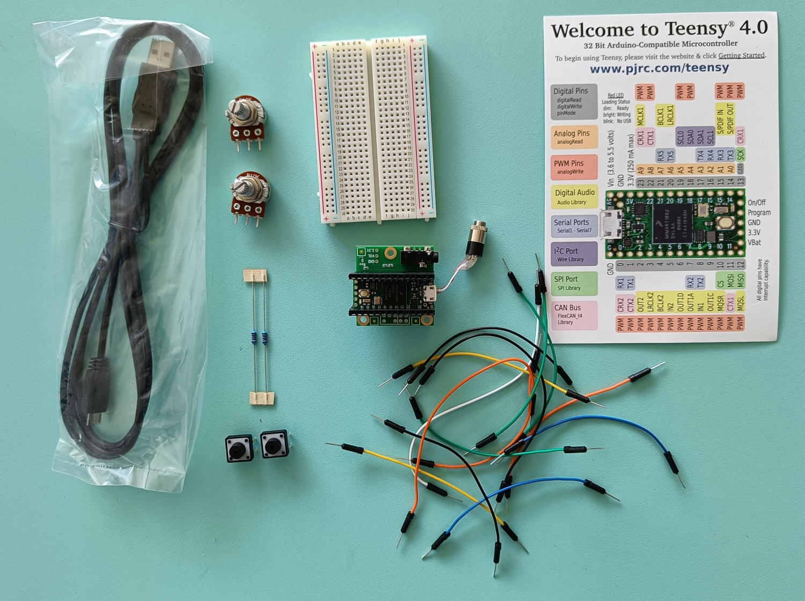

SON: 3TC Audio Project @ ENS Lyon
In this course, students program an embedded system (the Teensy 4.0: https://www.pjrc.com/store/teensy40.html) for real-time audio signal processing applications. By doing so, they learn the basics of audio software architecture, audio signal processing in C++, and embedded system programming (C++).
The course starts with lectures on embedded real-time audio signal processing. During this period, students are walked through the architecture of a real-time audio DSP system (e.g., audio callback, buffering, sampling, etc.), and learn various basic techniques for audio signal processing (e.g., filters, oscillators, sound synthesis techniques, sound processing techniques, sound analysis techniques, etc.) taking a very practical approach.
After this period, various project ideas are suggested to students. Students work in groups of 2 on projects. The project period culminates in a final presentation taking the form of a 10 minutes presentation where each group of students can present his project.
Instructors are:
- Romain Michon (Inria)
- Tanguy Risset (INSA Lyon)
Resources
- Course GitHub Repository: https://github.com/inria-emeraude/son-ens
- Teensy Audio Library: https://www.pjrc.com/teensy/td_libs_Audio.html
- The SON kit for a group of two students:

Requirements
- Bring your own computer for every class (including the first one).
- Installing Teensyduino as explained in Lecture 1.
Course Overview
- Lecture 1: Course Introduction and Programming Environment Setup
- Lecture 2: Audio Signal Processing Fundamentals
- Lecture 3: Digital Audio Systems Architectures and Audio Callback
- Lecture 4: Hardware Control and Audio Codec Configuration
- Lecture 5: Audio Processing Basics I
- Lecture 6: Embedded basics: interrupts
- Lecture 7: Embedded basics: embedded OS
- Lecture 8: Audio Processing Basics II
- Lecture 9: Introduction to Faust
- Lecture 10: Faust on the Teensy and Advanced Control
- Lecture 11: Some Other Useful Things to Know
-
Independent work on Projects
-
Final Presentations: Nov. 14, 2025
Evaluation
- CC: 50% (take home exam at the end of Lecture 8)
- Final Project: 50%